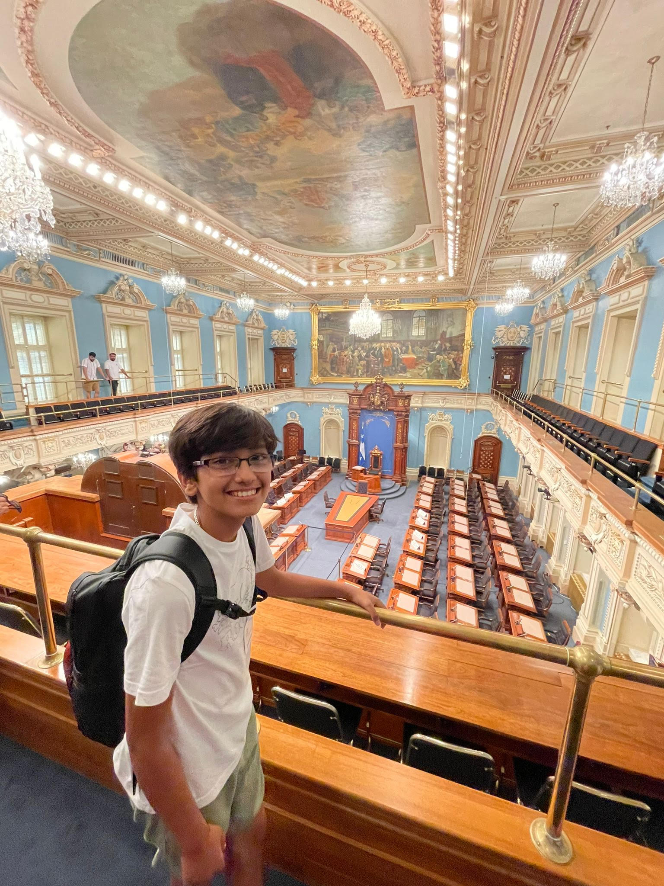

GEMS, Maryland
Biomedical Engineering
In this internship I learned about prosthesis and how prosethics and the bodies central nervous system works to help you functions and do everyday tasks.
|  |
Abhinav ChaudharyStudent at Loudoun Valley HS I love Python Development and learning Web Development. |
| Course | Institute | Year | Result |
|---|---|---|---|
| HTML & CSS Crash Course | NetNinja | 2024 | N/A |
| Intro to Cybersecurtiy | LVHS | 2024-2025 | N/A |
GEMS, Maryland
Biomedical Engineering
These projects showed my understadnig on turtle and fucntions with using pyhton.
I drew a tree using turtle and made a Tic Tac Toe game using functions and loops.
The "Washington Development and Expansion Visualization" (Wash-DEV) application is a powerful web-based tool designed to provide users with an in-depth understanding of Washington States growth over time. By leveraging historical and modern geospatial data, Wash-DEV allows users to explore the 5 yearly expansion of Washingtons built-up areas. The application features an interactive map that displays distribution of built-up surfaces, expressed in square metres per 100 m grid cell. Whether for educational purposes, urban planning, or historical research, Wash-DEV serves as a comprehensive resource, offering a visual representation of how Washington State has evolved and expanded across different time periods.